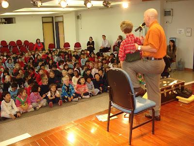
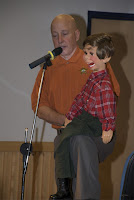
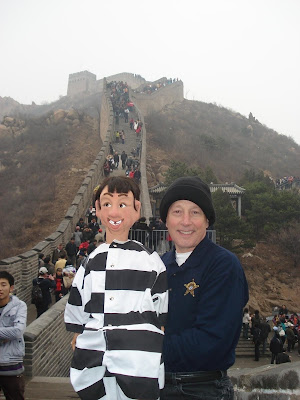
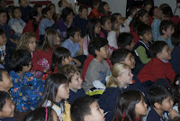

China revisited
12/15/2009
{kind=link}

Deputy Bob Walsh and Friends made their second tour to China schools in as many years.It was a a purposeful and adventuresome experience performing ventriloquist programs up and down China’s east coast in international and local schools.
{kind=link}

In this trip to east Asia, Deputy Bob and Friends presented 29 ventriloquist shows for over two thousand children on character and faith-based themes in the following schools:
Yew Chung International Schools – Primary (Hong Kong, Shanghai and Beijing)
Yew Chung International School (Secondary) (Hong Kong)
Gigamind Kindergarden (Hong Kong)
Po Kwong Buddhist School (Hong Kong special needs children)
Rong Kwong Hope School, Shantou, PRP
Bo Ai School, Shanxi Province, PRP
Inmate Joe and Jeremiah, the Student, accompanied Deputy Bob to Hong Kong and the various stops in China. Last time, it was Matthew’s time in the limelight. The children in the local schools of Shantou and Shanzi Province had never seen a ventriloquist before. They were not distracted even though an interpretor was necessary to translate the stories from English to Mandarin for eleven programs. The remaining programs were presented in English in the international schools, including an assembly for four hundred secondary students.
Christine Chan, founder, Bo Ai School in Shanxi Province, PRC, said, “the teachers and support staff highly esteemed Deputy Bob and Friends because of being in law enforcement and partnering in the community with educators to teach children character lessons.” By contrast, in China, people are afraid of law enforcement

Great Wall of China (Badalang): Deputy Bob toted Inmate Joe up those ascending steps in a carry bag but as soon as his ventriloquist character emerged to the public view, the duo enjoyed some moments of celebrity as folks wanted to take pictures with them.
Rong Kwong Hope School, Shantou, PRC: This was a public school for poor children in southern China. At one of the presentation introductions, the translator accidentally erred in translating the word “my bos
{kind=link}

s” (Lao ban) and said “my wife” (Lao po) when referring to Inmate Joe's sheriff. Oops!! The children in the class erupted in laughter and the mistake was correctly immediately. It was funny because Deputy Bob is a man and not a wife.Winter weather and frozen locks in the cargo bay of checked-in luggage on the Juneau Air bus created an opportunity for Inmate Joe (dummy) to escape from custody of law enforcement. The plane was re-routed back to its place of departure and it took two days for Inmate Joe to be back in the arms of Deputy Bob and later extradited back to Virginia.